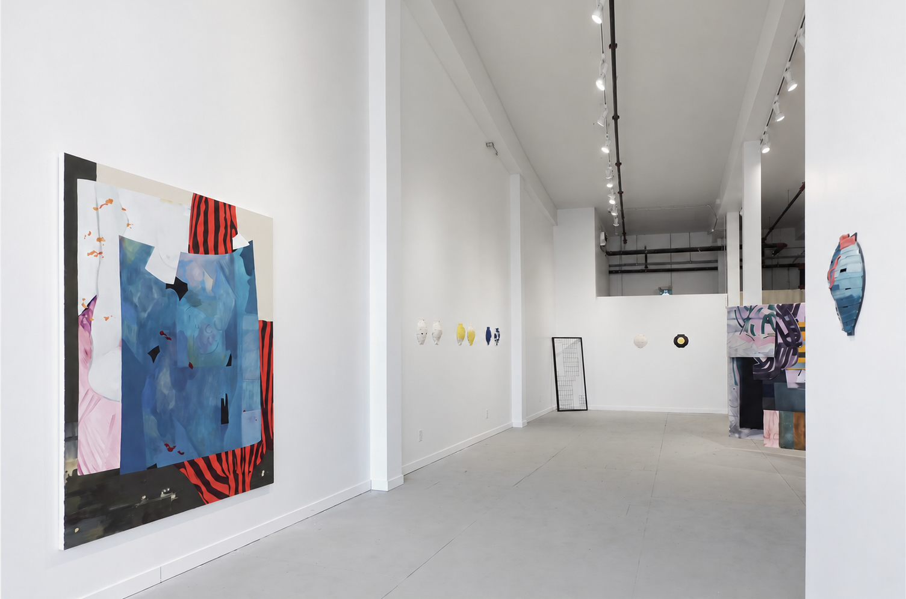
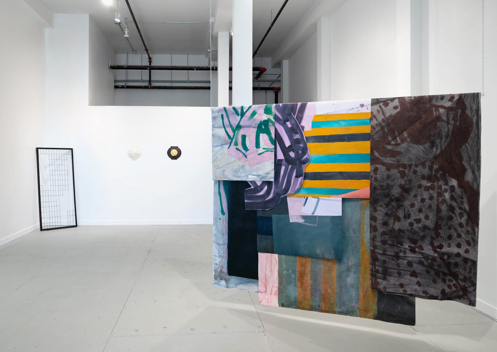
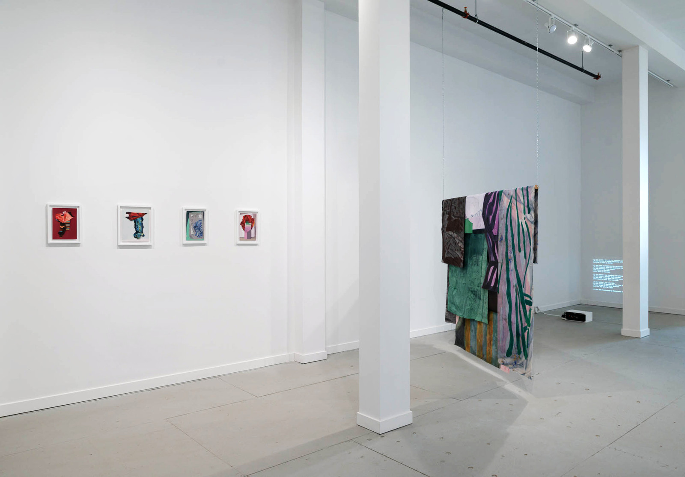
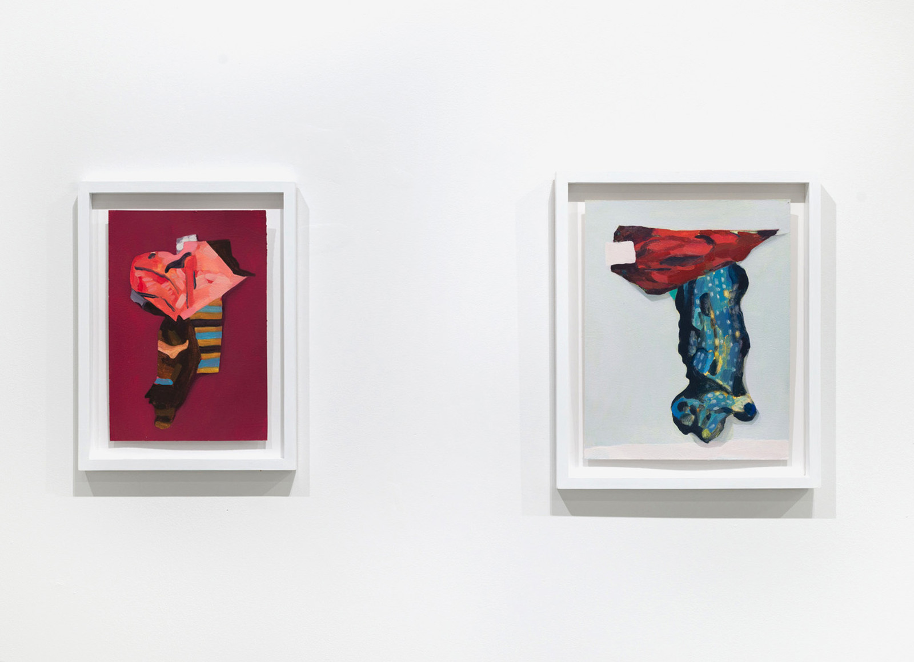
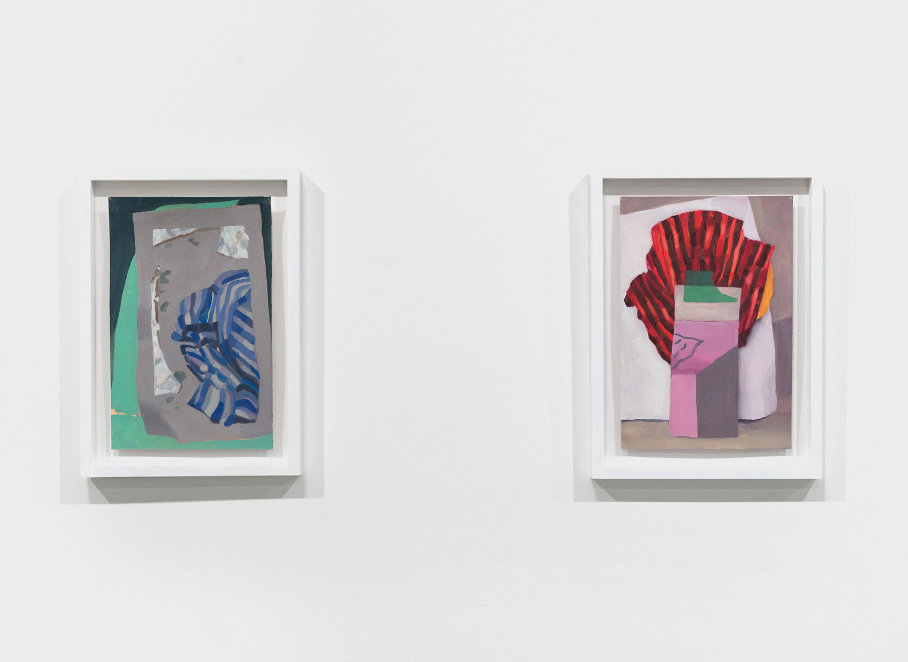
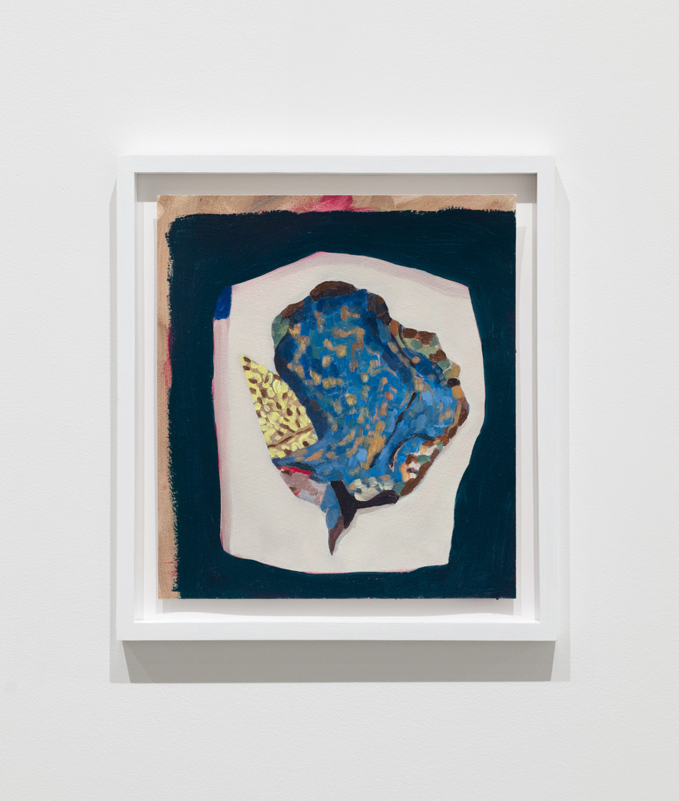
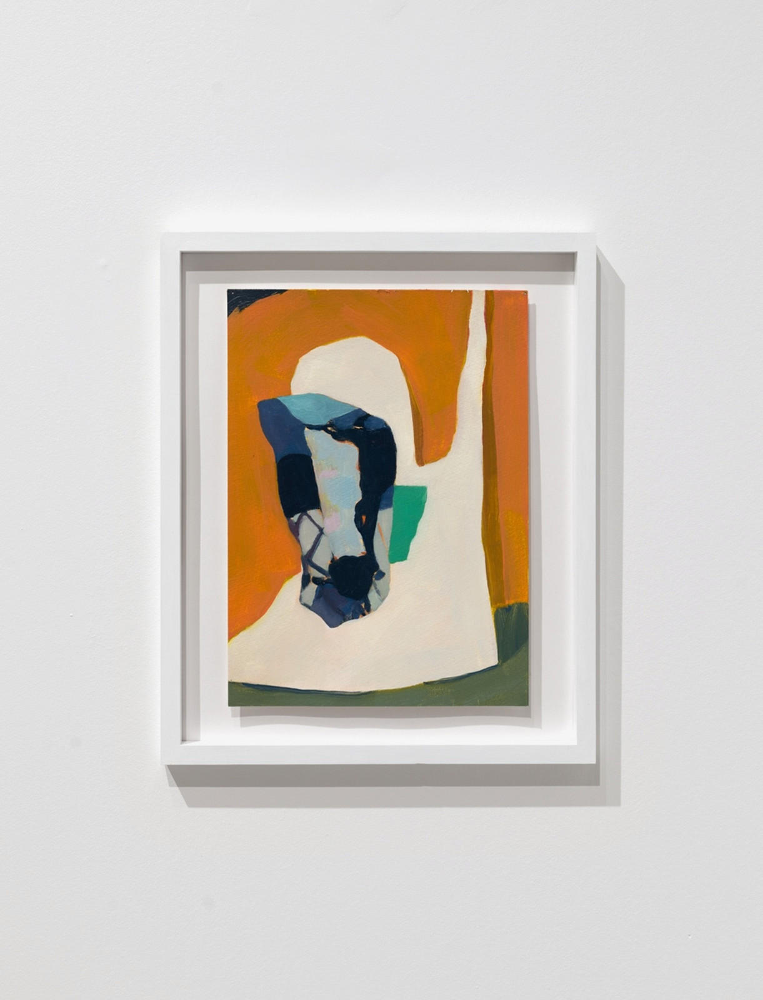

Left: Mixed Messages, 2024–25, 72” x 60”, oil on canvas

Right: Draped Composition (In-Progress), 2024–25, acrylic, tempera, ink, oil paint on canvas and recycled fabrics, approximately 78” x 84”


Strange Flower (Still Life No. 6) / Strange Flower (Still Life No. 4), 2024, each oil and acrylic on paper

Strange Flower (Still Life No. 3) / Strange Flower (Still Life No. 2), 2024, each oil and acrylic on paper

Strange Flower (Still Life No. 1), 2024, oil and acrylic on paper, 11” x 9 3/4”

Strange Flower (Still Life No. 5), 2024, oil and acrylic on paper, 11” x 8”